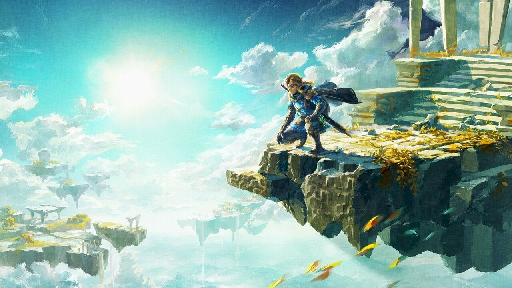

DarkTide
Img source Wallpaper Abyss
Darktide, made by the same people who made Vermintide 2,
Darktide is set in a more futuristic part of Warhammer
compared to the more medieval feeling of Vermintide 2.
Players can create their own characters and unravel the
mysteries of Tertium with 3 other heroes. If the gameplay
feels half as satisfying as Vermintide 2 I will want to pick this up as soon as possible
God of War Ragnorak

Img source Wallpaper Abyss
The sequel to the first PS4 God of War, Ragnorak continues the amazing storytelling
and combat of the first game and seemingly cranks it up to 11. Every time I see gameplay
of Ragnarok it pushes me just a bit further into wanting to buy a PS5, currently sitting
at a 10/10 on IGN and a 94% on metacritic, God of War Ragnarok is looking to be an era
defining game.
Elden Ring

Img Source Wallpaper Abyss
I may be a little late to the party to recommend you get Elden Ring,
but get Elden Ring. It’s a beautifully crafted game with tons of variation
of how you can approach it and with stunning visuals and boss fights it is
definitely in tight contention for Game of the Year
Legend of Zelda Tears of the Kingdom

Img source Wallpaper Abyss
Now this is one we don’t have a ton of information on, the next installment in the Legend
of Zelda franchise. The game is a sequel to Breath of the Wild and will be run off the same
amazing engine that Breath of the Wild was ran on back in 2017. I loved playing Breath of
the wild when it was released and its a game that the feeling while playing it hasn’t been
captured quite like it while playing any other open world game.